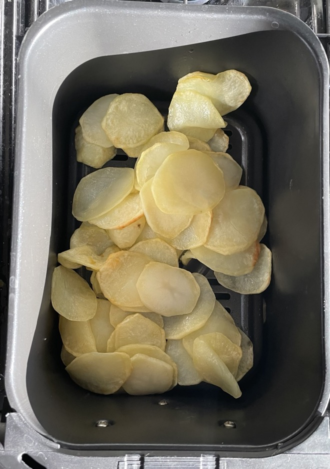

Spanish omelette
Potatoes
- Peel, slice with mandoline (number 2) and pat dry
- Bake in air fryer at 160°C for 20 mins
- Remove from heat and leave to cool
Onion
- Fry gently until soft and browned
- Remove from heat and leave to cool
Tortilla
- Mix and beat in bowl
- Add the onions and potatoes and mix gently
- Leave for 15 mins
- Cook gently for 20 mins until almost no runny egg on top
- Carefully flip with plate and cook other side for 5 mins
Serving
Notes
- Allow eggs to reach room temperature before using
- Flip tortilla using a large plate
- Use metal frying pan with steamer lid
- Waxy potatoes recommended
Pics
